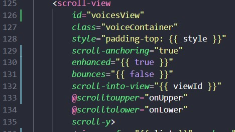

2021年工作总结
此次二次开发圈子小程序，有一个主包，三个分包，代码量一直处于快溢出阈值的程度。
二次开发通常是基于不动或尽量少的去动原代码开发逻辑，轻易去调整容易崩。
所以整理一下使用的技巧。
判断条件
多个函数执行需要新增相同的判断条件
记录时间：2021年1月
笨方法是创建一个公共条件函数，每个函数中去添加条件函数，需要修改所有的函数，且后续新增需求也要考虑到是否需要条件函数。或者创建前置函数设置条件处理函数，修改所有的函数调用方式，新增函数同样需要考虑是否条件一致。
function foo(a) {
console.log('a: ', a)
}
// 方法一(推荐)
// function handleClick(fn, ...args) {
// // ...前置处理逻辑
// fn && typeof fn === 'function' && fn.apply(this, args)
// }
// 方法二
function handleClick(fn) {
// ...前置处理逻辑
fn && typeof fn === 'function' && fn.apply(this, Array.prototype.slice.call(arguments, 1))
}
handleClick(foo, 1)也可以根据需求，使用事件委托利用事件捕获进行处理。
同一模块下，会先响应最外层的事件捕获 -> 最内层的事件捕获 -> 最内层的事件冒泡 -> 最外层的事件冒泡。
新增处理逻辑
在一串回调中间新增一块处理逻辑
记录时间：2021年2月
逻辑复杂的时候难免跳来跳去使用回调。需求是在中间的一个回调函数中添加一段处理逻辑，所需参数是前几个回调中的数据，可以使用笨办法，一层一层的传递参数，但是这样前面的回调都要修改一层一层向下传值，修改范围太大，且不美观和容易数据丢失和出错。可以使用闭包进行处理。
data = {
postStatistics: null // 声明
}
onLaunch(options) {
this.data.postStatistics = this.postStatistics(options) // 保存执行上下文环境
}
// ... 经过一系列请求-回调之后
userLogin (code, tokenCache) {
circleApi.login({
// ...
}).then(res => {
// ...
this.data.postStatistics && this.data.postStatistics() // 调用
// ...
});
}
postStatistics(options) { // 定义闭包函数
const opt = options
const that = this
return function() {
const data = {
app_id: that.globalData.appId,
scenes: opt.scene,
wx_info: JSON.stringify(opt.referrerInfo),
way_id: JSON.stringify(opt.query)
}
circleApi.postStatistics({
data,
getToken: true
})
}
}添加 WebSocket 相关
记录时间：2021年2月
app.wpy 中统一处理 WebSocket 相关逻辑，全局仅生成一个 SocketTask 对象，方便管理。
使用单例模式。
监听处理逻辑：
handleOpenSocket() { // socket创建新的连接之后后端会关闭掉之前的连接，不区分安卓和ios 统一处理
const that = this
const socketTask = that.globalData.socketTask
const { userPlatform, token } = this.globalData
if (userPlatform === '' || token === '') return
const socket = new Socket({
url: `${wsUrl}?XqCircleToken=${token}`,
onAcceptMsg(res) {
// ... 接受到信息处理逻辑
},
// 关闭
onClose(socketTaskId) {
if (that.globalData.socketTask !== null && socketTaskId === that.globalData.socketTask.socketTaskId) {
that.globalData.socketTask = null
}
}
})
that.globalData.socketTask = socket
}Socket,js
const HEARTBEAT_MSG = '--HEARTBEAT--'
const HEARTBEAT_RATE = 5000
export default class Socket {
constructor(options) {
this.heartbeatTimer = null
this.isOpen = false
this.heartbeatStatus = false
this.onOpen = typeof options.onOpen === 'function' ? options.onOpen : this.handleOpen
this.onClose = typeof options.onClose === 'function' ? options.onClose : this.handleClose
this.acceptMsg = typeof options.onAcceptMsg === 'function' ? options.onAcceptMsg : this.handleAcceptMsg
this.init(options.url)
}
init(url) {
if (!url) return
const that = this
const socketTask = wx.connectSocket({
url,
success(res) {
that.socketTaskId = res.socketTaskId
},
fail(err) {
console.error(`connectSocket err`, err)
}
})
socketTask.onOpen(() => {
this.isOpen = true
this.onOpen()
})
socketTask.onMessage(res => {
if (!res.data.includes(HEARTBEAT_MSG)) {
this.acceptMsg(res) // 非心跳包
}
})
socketTask.onClose(() => {
this.handleInit()
this.onClose(this.socketTaskId)
})
socketTask.onError(res => {
this.handleInit()
this.onClose(this.socketTaskId)
})
this.instance = socketTask
}
handleOpen() {
this.sendHeartbeat()
}
handleClose() {
console.log('handleClose')
}
handleInit() {
this.isOpen = false
this.instance = null
this.clearHeartbeat()
}
handleCloseConnect() {
const instance = this.instance
const that = this
return new Promise((resolve, reject) => {
instance && instance.close({
success(res) {
resolve(res)
},
fail(err) {
reject(err)
},
complete() {
// 重置
that.handleInit()
that.onClose()
}
})
})
}
handleSendMsg(data) {
const that = this
const instance = this.instance
return new Promise((resolve, reject) => {
instance && instance.send({
data: typeof data === 'object' ? JSON.stringify(data) : data,
success(res) {
resolve(res)
that.heartbeatStatus = true
},
fail(err) {
reject(err)
that.heartbeatStatus = false
that.instance && that.handleCloseConnect()
}
})
})
}
handleAcceptMsg(res) {
console.log('accept msg: ', res)
}
sendHeartbeat() {
this.heartbeatTimer = setTimeout(() => {
this.handleSendMsg(HEARTBEAT_MSG)
this.sendHeartbeat()
}, HEARTBEAT_RATE)
}
clearHeartbeat() {
if (this.heartbeatTimer) {
clearTimeout(this.heartbeatTimer)
this.heartbeatTimer = null
}
}
}
ASCII正则表达式
记录时间：2021年3月
需求修改，用户自定义输入微信号，需要支持英文字母、数字和英文字符，所以使用ASCII的方式进行正则判断。整理在正则表达式文章中。
export function verifyWxId(wxId) {
const wxreg=/^[\x21-\x7e]{6,64}$/g; // 自定义规范 英文标点符号
return wxreg.test(wxId)
}CSS样式
实现字体渐变
参考链接：
https://segmentfault.com/a/1190000011882933
https://blog.csdn.net/CarsonWoo/article/details/89168346
九宫格处理
动态图片需要九宫格查看
.dynamicWrap {
margin-bottom: 60rpx;
width: 654rpx;
.imagesWrap {
margin-right: -6rpx;
display: flex;
flex-wrap: wrap;
.dynaminImg {
margin: 0 6rpx 6rpx 0;
width: 214rpx;
height: 214rpx;
border-radius: 8rpx;
}
}
}view 布局样式
<view class="dynamicWrap">
<view class="imagesWrap">
<image
wx:for="{{ info.photos }}"
wx:key="*this"
class="dynaminImg"
lazy-load="true"
src="{{ item }}?imageView2/1/w/214/h/214"
mode="aspectFill"
@tap.stop="onPreview({{ item }}, {{ info.photos }})"></image>
</view>
</view>我总是会陷入图片之间的间距问题，想要图片间距自动实现距离问题使用 justify-content: space-between ，但是会遇到两张图片间距过大的问题，所以不能单纯的使用这个属性进行间距控制。使用 margin-right 是最为保险的使用方式。
实现波纹动效

<view class="recommending">
<view class="recommendingContent">
<view class="avatarWrap">
<open-data type="userAvatarUrl"></open-data>
</view>
<view class="recommendRipple">
<view class="ripple"></view>
<view class="ripple"></view>
<view class="ripple"></view>
</view>
</view>
</view>样式
.recommending {
position: fixed;
top: 0;
width: 100%;
height: 100vh;
display: flex;
justify-content: center;
align-items: center;
background: #fff;
z-index: 20;
.recommendingContent {
position: relative;
}
.avatarWrap {
width: 200rpx;
height: 200rpx;
border-radius: 50%;
overflow: hidden;
}
.recommendRipple {
position: absolute;
top: 50%;
left: 50%;
display: flex;
justify-content: center;
align-items: center;
border-radius: 50%;
transform: translate(-50%, -50%);
overflow: hidden;
animation: ripple 1000ms step-start 0s infinite;
.ripple {
position: absolute;
width: 240rpx;
height: 240rpx;
border-radius: 50%;
border: 1px solid;
border-color: rgba(239, 75, 75, 1);
&:nth-child(1) {
width: 280rpx;
height: 280rpx;
border-color: rgba(239, 75, 75, .6);
}
&:nth-child(2) {
width: 320rpx;
height: 320rpx;
border-color: rgba(239, 75, 75, .2);
}
}
}
}
@keyframes ripple {
0%, 100% {
width: 220rpx;
height: 220rpx;
}
25% {
width: 260rpx;
height: 260rpx;
}
50% {
width: 300rpx;
height: 300rpx;
}
75% {
width: 340rpx;
height: 340rpx;
}
}小程序踩坑
兼容问题
记录时间：2021-4-8
需要更换getUserInfo的逻辑，换为wx.getUserProfile，但是官方给的兼容例子里，低版本微信也可以成功调用wx.getUserProfile，但是缺少必要的加解密信息，所以低版本也是支持wx.getUserProfile但是功能不完善，所以判断当前版本是否能使用具体某个功能时需要使用wx.canIUse()进行判断，如果使用常用浏览器判断是否支持某个特定api的方法是会触发异常bug。
背景图片
记录时间：2021-4-21
小程序不支持静态背景图片，主要是路径名会变，所以即使在开发工具中没有问题，可能会在真机测试出现问题。
所以使用动态链接 url 进行设置背景图片。
设置 background-image 没有作用，只能设置 background，相应的 background-size 也是没有作用的。
background 简写属性：background-clip、background-color、background-image、background-origin、background-position、background-repeat、background-size 、background-attachment
- 在每一层中，下列的值可以出现 0 次或 1 次：
<attachment><bg-image><position><bg-size><repeat-style>
<bg-size>只能紧接着<position>出现，以”/“分割，如： “center/80%“.<box>可能出现 0 次、1 次或 2 次。如果出现 1 次，它同时设定background-origin和background-clip。如果出现 2 次，第一次的出现设置background-origin，第二次的出现设置background-clip。<background-color>只能被包含在最后一层。
动画
记录时间：2021-4-27
需求想要实现动画第二种效果：参考链接 - Android:仿“某音”APP 多头像跳动动画+轮播动画+心跳动画+输入框抖动动画

对于实现想法：
-
如果仅仅使用 CSS 动画帧：
- 如果第一个元素进入在容器最左侧，第一个元素消失时第二个元素和第三个元素前移，第四个元素进入，如何控制第二个元素和第三个元素的移动位置。（目前想法，设置三种动画帧，设置延时时间）
- 如果第一个元素和第四个元素效果一样，则可以不用考虑第二个元素和第三个元素迁移的动画帧和距离。
- 面临如何循环显示问题。
采用了第一种方法
wxml
<view class="container"> <view class="content" bind:tap="onStartAnimation"> <view id="item_{{ item }}" wx:for="{{ itemList }}" wx:key="item" class="item {{ index < 2 ? 'fade' + index : 'fade2' }}" style="animation-delay: {{ (index + 1) * 500 }}ms" ></view> </view> <button bind:tap="onClick">fibonacci</button> </view>wxss
.container { height: 100vh; width: 100vw; display: flex; justify-content: center; align-items: center; } .content { position: relative; height: 100rpx; width: 300rpx; background-color: aqua; overflow: hidden; } .item { position: absolute; left: 0; top: 0; height: 80rpx; width: 80rpx; border-radius: 50%; border: 1px solid #fff; background: red; opacity: 0; } .fade0 { animation-name: fadeFirst; animation-duration: 2000ms; animation-fill-mode: both; animation-delay: 500ms; } .fade1 { animation-name: fadeSecond; animation-duration: 2000ms; animation-fill-mode: both; animation-delay: 1000ms; } .fade2 { animation-name: fadeThird; animation-duration: 2000ms; animation-fill-mode: both; animation-delay: 1500ms; } /* 500ms 时到达边缘位置 1500ms时c出现 a开始消失和移动 */ @keyframes fadeFirst { 0% { opacity: 0; transform: translateX(50%); } 25%, 75% { opacity: 1; transform: none; } 100% { opacity: 0; transform: translateX(-50%); } } @keyframes fadeSecond { 0% { opacity: 0; transform: translateX(100%); } 25%, 50% { opacity: 1; transform: translateX(50%); } 75% { opacity: 1; transform: translateX(0); } 100% { opacity: 0; transform: translateX(-50%); } } @keyframes fadeThird { 0% { opacity: 0; transform: translateX(150%); } 25% { opacity: 1; transform: translateX(100%); } 50% { opacity: 1; transform: translateX(50%); } 75% { opacity: 1; transform: translateX(0); } 100% { opacity: 0; transform: translateX(-50%); } }最后实现效果

对于每个已显示的头像使用 setTimeout 进行设置每个时间段的动画（会有卡顿不圆滑）
微信小程序的关键帧动画
将每个元素动态绑定动画，但是没有延时设置，所以手动 setTimeout 挂载动画实现，由于是单线程的，如在进行动画的时候点击运行斐波那契数列，就会出现动画卡住的问题。
实现延时绑定的方法参考链接：每隔 1s 输出一个结果
const { log } = console const delay = (context, fn, params) => { return new Promise((resolve, reject) => { setTimeout(() => { console.log('delay') fn.call(context, params) resolve(params) }, 1000) }) } Page({ data: { itemList: [1, 2, 3, 4, 5, 6], }, onLoad: function (options) { const list = this.data.itemList const that = this function setDelay(i = 0, promise = Promise.resolve()) { if (i > list.length) return promise = promise.then(res => { console.log(res) return delay(that, that.animation, `item_${i}`) }) setDelay(i + 1, promise) } setDelay() }, animation(id) { this.animate(`#${id}`, [ { opacity: 0, translateX: 40}, { opacity: 1, translateX: 0}, { opacity: 0, translateX: -40}, ], 5000) }, transitionend() { // log('transitionend') } })小程序对async、await支持度不高
以上代码实现效果：

动画卡住问题：运行一段时间之后点击运行斐波那契数列，运行结束后才继续执行。

最后使用 CSS 动画的样式实现，运行 Fibonacci 函数时不会发生卡顿现象。
最后和产品沟通 最终实现效果是 简单的滑动

这种比较简单，使用了两个重复数组进行拼接，会在动画的结尾回到头部，但是不会给人明显的跳动感
样式部分：
@avatarWidth: 48rpx;
@avatarSpace: -18rpx;
@avatarItem: 10;
@startPos: -50rpx;
@endPos: @startPos - @avatarItem * (@avatarWidth + @avatarSpace);
.avatarList {
margin-right: 12rpx;
height: 48rpx;
width: 108rpx;
overflow: hidden;
}
.listWrap {
display: flex;
align-items: center;
}
.move {
animation: 5s move infinite linear;
}
.avatarItem {
flex-shrink: 0;
margin-right: @avatarSpace;
height: @avatarWidth;
width: @avatarWidth;
background: #eee;
border: 1px solid #fff;
border-radius: 50%;
box-sizing: border-box;
overflow: hidden;
.avatar {
height: @avatarWidth;
width: @avatarWidth;
}
}
@keyframes move {
0% {
transform: translateX(@startPos);
}
100% {
transform: translateX(@endPos);
}
}布局部分：
<view class="avatarList">
<view class="listWrap {{ isCurrent ? 'move' : '' }}">
<view class="avatarItem" wx:for="{{ info.members }}" wx:key="index">
<image class="avatar" lazy-load="true" mode="aspectFill" src="{{ item }}?imageView2/1/w/20/h/20"></image>
</view>
<view class="avatarItem" wx:for="{{ info.members }}" wx:key="*this">
<image class="avatar" lazy-load="true" mode="aspectFill" src="{{ item }}?imageView2/1/w/20/h/20"></image>
</view>
</view>
</view>swiper踩坑
记录时间：2021-5-26
swiper 如果使用动态加载的方式，如果重新设置已经渲染的列表，会打乱swiper内部顺序。需要保证前面加载过的item不能被挪掉否则swiper内部可能会错乱。
社区中类似问题：
动态改变渲染swiper-item的数组时出现current为-1的情况
【必现】动态修改 swiper-item bug：添加 swiper-item 当前页面变空白
current变为-1问题，使用开关控制显隐强制重新渲染，解决问题。
动态加载更换当前页面内容变为空白时，改变 currentIndex 为有效位后再进行移动。
会滑动到列表中的某一位置，而不是指定位置。
业务逻辑会判断当前需要过滤的列表内容是否包含首位数据项。
特殊情况，过滤项包含当前显示项和首位数据项，则要先滑动到有效位（即未过滤数据项）后，再更新列表数据，滑动到第一项。
如果过滤项不包含首位数据项可以直接手动滑动到第一项，再更新列表，如果包含则不能直接滑动到第一项，否则会同样出现空白问题，需要先更新列表后滑动到第一项。
动态加载问题总结：
整个列表全换
只减少部分列表内容
- 减少部分是否包含首位数据项
- 减少部分是否包含当前加载数据项 且 包含首位数据项
- 其他情况
const { data, errcode, circle_data = [], is_all_buy } = res.data
const firstId = circle_data[0].id
const originCircleLen = this.circleList.length
const newCircleLen = circle_data.length
this.customData.currentItemId = firstId
// 初始加载
if (originCircleLen === 0) {
this.circleList = circle_data
this.circlePurchaseStatus = !!is_all_buy
this.$apply()
this.getRecommend(firstId)
return
}
// 判断是否买了新圈子
const currentCircles = circle_data.map(item => item.id)
// 判断之前的圈子列表和新的列表是否有出入
const filterIds = []
const filters = this.circleList.filter((item, index) => {
if (!currentCircles.includes(item.id)) {
filterIds.push(index)
return true
}
return false
})
const filterFirst = filterIds.includes(0)
this.circlePurchaseStatus = !!is_all_buy
// 没有买圈子 全买 与全未购之间也无差别 仅修改性别 不修改地区 无差别
if (filters.length === 0 &&
!this.circlePurchaseStatus &&
!refresh &&
originCircleLen === newCircleLen) {
return
}
let timer = null
const changeFullCircle = filterIds.length === originCircleLen // 过滤更换圈子和旧圈子列表长度相等 可能是换整个圈子列表
// 换地区 换整个圈子： 如果没有滑动 走初始先置 如果已经滑动
if (changeFullCircle && this.customData.hasSwitchSwiper) {
this.showSwiper = false
this.currentItemIndex = 0
this.circleList = circle_data
this.$apply()
timer = setTimeout(() => {
this.showSwiper = true
this.$apply()
this.getRecommend(firstId)
})
return
}
// 特殊情况：过滤列表包含当前滑动位 不是全部换圈子 还是同一个地区列表
if (filterFirst && filterIds.includes(this.currentItemIndex) && !changeFullCircle) {
// 找到一个不等于 currentItemIndex 且有效的位置 不是连续的前三位 不是连续的后三位
let validIndex = filterIds.pop()
let lastIndex = originCircleLen - 1
// 等于最后一个位置 从后往前找 找到有效位
validIndex = validIndex === lastIndex ? findBackValid(filterIds, lastIndex, validIndex, validIndex) : validIndex + 1
this.currentItemIndex = validIndex
this.$apply()
}
// 过滤列表包含第一个圈子 初始先置
if (filterFirst) {
// 如果买的是第一个圈子 则不能先置index
this.circleList = circle_data
this.$apply()
timer = setTimeout(() => {
timer = null
// 特殊情况下没有用 小程序会自动再置回特殊情况位
this.currentItemIndex = 0
this.$apply()
this.getRecommend(firstId)
})
return
}
// 其他情况 refresh
this.currentItemIndex = 0
this.$apply()
timer = setTimeout(() => {
timer = null
this.circleList = circle_data
this.$apply()
this.getRecommend(firstId)
})
// =============================
/**
* 从后向前找有效位
* @param {Number[]} list
* @param {Number} last
* @param {Number} previous
* @param {Number} current
* @returns
*/
export function findBackValid(list, last, previous, current = previous) {
// 如果当前的index 等于最后一个 往前找
if (current === last) {
previous = current // 保存当前值
current = list.pop()
last -= 1
return findBackValid(last, previous, current)
}
// 当前的index 不等于最后一个index 判断和上一个是否是连续的index
const next = previous - 1
if (next === current) {
// 是连续的index 返回最前面的index
return next - 1
}
// 不是连续的index 就返回中间的
return next
}粗暴的解决方案：
// 直接控制显隐问题
let timer = null
this.showSwiper = false
this.currentItemIndex = 0
this.circleList = circle_data
this.$apply()
timer = setTimeout(() => {
this.showSwiper = true
this.$apply()
this.getRecommend(firstId)
timer = null
})swiper 其他相关问题
答案记录：
微信小程序答题页——swiper渲染优化及swiper分页实现
web-view 缓存问题
记录时间：2021-5-27
image 自适应高度
记录时间：2021-6-8
style 设置 width: 100%
image 标签 mode="widthFix"
IOS 时间处理兼容
记录时间：2021-6-30
IOS 中将 String 转换成 Date 类型时需要注意 String 的格式
// 兼容 ios 无法识别 yyyy-MM-dd hh:mm:ss 格式 需要转换成 yyyy/MM/dd hh:mm:ss 或 yyyy-MM-ddThh:mm:ss
let serverTime = '2021-06-30 17:12:23' // || Date.now()
typeof serverTime === 'string' && (serverTime = serverTime.replace(' ', 'T'))
// 或
// typeof serverTime === 'string' && (serverTime = serverTime.replace(/-/g, '/'))音频播放
记录时间：2021-7-23
iOS 静音模式下，如果不进行特殊的设置，在有音量的情况下无法播放出声音，需要使用 wx.setInnerAudioOption(Object object) API 进行全局设置。
如果在相同的音频地址下，重复设置地址不是重新播放而是继续播放。
Android 环境下，如果正在播放第一条音频，再点开第二条音频，即使重新设置了音频对象的src，但会出现两条音频同时播放的情况，所以需要手动 stop 之后再设置 src 进行 play。
无限列表
记录时间：2021-7-23
需求是页面实现一个列表，但是产品没有限制列表长度，导致刷到34页（20条/页）时，爆栈了。
小程序社区官方回复页面可以存在 16000 个节点，如果页面过于复杂则需要删减。
如果限制了页码长度（趋于极限位），刷到极限页面，再在页面上做操作时会非常的卡顿，所以利用滑动窗口原理实现一个无限列表，仅维持页面上的2页（40条）数据。
至于为什么是2页数据，是为了下滑/上滑加载新的一页时，当前屏显示的数据仍保持在原位，加载完成后，用户可以继续往下滑查看数据，有更好的交互体验。可以大于2页，但是需要根据当前页面的复杂程度，页面节点越多页面性能越差。
Android 和 iOS 的表现差异在于，iOS有回弹机制，而 Android 则需要手动定位。但是在 wepy 框架和原生小程序中表现不一致，不确定是否是页面结构的问题。
实现方案：分页加载 + 分页显示
项目截图效果和实验截图效果：

项目中使用的是 wepy 1.7.x 写的，子组件中监听 scroll-view 的 scrolltoupper 事件和 scrolltolower 事件，并向父组件进行派发，父组件进一步处理响应事件。
父组件中的相关逻辑：
框架编译后有个问题就是无法关闭 iOS 的回弹效果，因此会在一段时间内持续触发 scrolltoupper 事件和 scrolltolower 事件 ，如果不设置时间间隔，设置好的滚动位会被回弹重新设置到顶部位置。
无法关闭 iOS 的回弹效果：微信小程序中的文档属性设置也都设置正确（真机打开调试模式查看 WXML 文档结构上组件的属性，加以验证），也增加了 ScrollViewContext 的 bounces 控制，但是依旧不生效，可能和页面结构有关，没有深究。
customData = {
voiceCurrentPage: 1,
tempVoiceList: [],
isAllVoice: false, // 已经加载完所有的voice list
waitBounceTime: 1000, // 处理 ios回弹问题
voiceScrollNode: null, // scroll 节点
}
onReady() {
wx.createSelectorQuery()
.select('#voicesView').node()
.exec(res => {
const scrollView = res[0].node
console.log(scrollView)
this.customData.voiceScrollNode = scrollView
scrollView.bounces = false
})
}
// =================== 核心代码部分 ===============================
// 上一页
handlePrevPage(scrollTop) {
// TODO
if (this.customData.isVoiceLoading) {
return
}
console.log('handlePrevPage')
const { voiceCurrentPage, tempVoiceList, voiceScrollNode } = this.customData
const len = tempVoiceList.length
if (len < 3 || voiceCurrentPage < 3) {
return
}
console.log('handlePrevPage before: ', voiceCurrentPage)
this.customData.isVoiceLoading = true
wx.showLoading({
title: '上一页',
mask: true,
})
voiceScrollNode.scrollEnabled = false
// 窗口滑动
let timer1 = setTimeout(() => {
let list = this.voiceList.slice(0, 20) // 当前列表第一页数据
const viewId = `item_${ list[0].id }`
list.unshift(...tempVoiceList[voiceCurrentPage - 2 - 1]) // 数组的index 要比页数少一
this.voiceList = list
this.customData.voiceCurrentPage = voiceCurrentPage - 1
this.$apply()
console.log('handlePrevPage after: ', this.customData.voiceCurrentPage)
let timer2 = setTimeout(() => {
this.voiceViewId = viewId
this.$apply()
timer2 = null
this.customData.isVoiceLoading = false
wx.hideLoading()
voiceScrollNode.scrollEnabled = true
})
timer1 = null
}, this.customData.waitBounceTime)
}
// 下一页
handleNextPage() {
// TODO
const { voiceCurrentPage, tempVoiceList, voiceScrollNode } = this.customData
if (voiceCurrentPage === tempVoiceList.length) {
console.log('handleNextPage new', voiceCurrentPage, tempVoiceList.length)
// 获取下一页数据
this.getVoiceList(voiceCurrentPage + 1)
} else {
console.log('handleNextPage old before', voiceCurrentPage, tempVoiceList.length)
if (this.customData.isVoiceLoading) {
return
}
this.customData.isVoiceLoading = true
wx.showLoading({
title: '下一页',
mask: true,
})
voiceScrollNode.scrollEnabled = false
let timer = setTimeout(() => {
// 窗口滑动
let list = this.voiceList.slice(-20)
list = list.concat(tempVoiceList[voiceCurrentPage]) // 最后一页数据 + 数组的index 要比页数少一
this.voiceList = list
this.customData.voiceCurrentPage = voiceCurrentPage + 1
this.$apply()
console.log('handleNextPage old after', this.customData.voiceCurrentPage)
this.customData.isVoiceLoading = false
wx.hideLoading()
voiceScrollNode.scrollEnabled = true
timer = null
}, this.customData.waitBounceTime)
}
}
// 获取新数据
getVoiceList(page) {
if (this.customData.isVoiceLoading || this.customData.isAllVoice) {
return
}
this.customData.isVoiceLoading = true
this.$apply()
this.loading()
Promise.all([
circleApi.getRecommendVoice({
data: {
page
},
getToken: true
}),
new Promise((resolve) => {
setTimeout(() => {
resolve()
}, this.customData.waitBounceTime)
})
]).then(res => {
const { errcode, data } = res[0].data
if (errcode !== 0) {
return
}
const { user_list, man_mask_list, woman_mask_list } = data
if (user_list.length > 0) {
// 缓存新数据
this.customData.tempVoiceList.push(user_list)
this.voiceList = this.voiceList.slice(-20).concat(user_list)
this.customData.voiceCurrentPage = page
console.log('voiceCurrentPage: ', page)
} else {
this.customData.isAllVoice = true
}
this.customData.isVoiceLoading = false
this.$apply()
this.hideLoading()
}).catch((err) => {
this.customData.isVoiceLoading = false
this.hideLoading()
})
}实验代码：
实验代码会和实际项目有差异，原因在于实验小程序成功取消了 iOS 的回弹效果。
<!-- WXML -->
<view class="container">
<scroll-view
id="scrollView"
class="scrollView"
scroll-y="true"
scroll-anchoring
enhanced="{{ true }}"
bounces="{{ false }}"
scroll-into-view="{{ toView }}"
bindscrolltoupper="upper"
bindscrolltolower="lower">
<view wx:for="{{ itemList }}" wx:key="item" id="item_{{ item }}" class="scroll-view-item">
{{ item }}
</view>
</scroll-view>
</view>/* WXSS */
.scrollView {
width: 100%;
height: 100vh;
}
.scroll-view-item{
height: 300rpx;
line-height: 300rpx;
text-align: center;
font-size: 48rpx;
font-weight: bold;
}
.scroll-view-item:nth-child(odd) {
background-color: beige;
}
.scroll-view-item:nth-child(even) {
background-color: bisque;
}function more(start) {
const list = []
for (let i = start; i < start + 20; i++) {
list.push(i)
}
return list
}
Page({
data: {
toView: '',
itemList: [],
},
customData: {
tempList: [],
currentPage: 0,
loading: false,
scrollView: null,
itemNum: 0,
},
onLoad() {
const list = more(0)
this.customData.tempList.push(list)
this.setData({
itemList: list
})
},
onReady() {
const query = wx.createSelectorQuery()
query.select('#scrollView').node()
query.select('#scrollView').boundingClientRect()
query.select('.scroll-view-item').boundingClientRect()
query.exec(res => {
const scrollView = res[0].node
scrollView.bounces = false
this.customData.itemNum = Math.floor(res[1].height / res[2].height)
console.log(this.customData.itemNum)
})
},
upper() {
if (this.customData.loading) {
return
}
this.customData.loading = true
this.promiseTimeout().then(() => {
this.prevItems()
this.customData.loading = false
})
},
lower() {
if (this.customData.loading) {
return
}
this.customData.loading = true
this.promiseTimeout().then(() => {
this.nextItems()
this.customData.loading = false
})
},
prevItems() {
const { tempList, currentPage } = this.customData
let list = this.data.itemList
this.customData.currentPage = currentPage - 1
if (tempList.len < 2 || currentPage < 2) {
return
}
list = list.slice(0, 20)
const itemId = `item_${list[0]}`
list.unshift(...tempList[currentPage - 2])
this.setData({
itemList: list
}, () => {
this.setData({
toView: itemId
})
})
},
nextItems() {
const { tempList, currentPage, itemNum } = this.customData
const len = tempList.length
let list = this.data.itemList
this.customData.currentPage = currentPage + 1
list = list.slice(-20)
const itemId = `item_${list[list.length - 1 - itemNum]}`
if (currentPage === len - 1) {
const newList = more((currentPage + 1) * 20)
this.customData.tempList.push(newList)
list = list.concat(newList)
this.setData({
itemList: list
}, () => {
this.setData({
toView: itemId
})
})
} else {
list = list.concat(tempList[currentPage + 1])
this.setData({
itemList: list
}, () => {
this.setData({
toView: itemId
})
})
}
},
promiseTimeout(time = 0) {
return new Promise((resolve, reject) => {
let timer = setTimeout(() => {
resolve()
timer = null
}, time)
})
}
})脱离小程序平台，可以使用虚拟 DOM 的方式进行实践，补充更多阅读的文章：https://juejin.cn/post/6995334008603148295
wepy 1.7.X 踩坑
repeat
坑记录：https://github.com/Tencent/wepy/issues/1549
关于 swiper
如果使用 repeat组件进行循环包裹 swiper-item 原生组件中使用的自定义组件，则向自定义组件传入的值无法进行隔离，接收的 prop 除渲染在 view 上的数据，其他数据则一直为首个数据项，如果需要传值，则需要将数据保存在 data-* 上，或方法定义传值。
关于watch
普通组件中可以使用watch属性，被repeat包裹的组件就无法进行watch
关于循环组件中的data 状态切换
状态切换不是单一的，会影响到整个 repeat 渲染列表。
事件相关
组件自定义事件，只能绑定自定义事件名
组件捕获，外部页面捕获能够截断组件内部捕获，同名 capture。
注意 加上阻止事件冒泡 capture-catch（
@tap.capture.stop）
父子组件事件捕获是用的同一个链上的，如果同名，会响应父组件定义的事件捕获。
最后的解决方法是用遮罩。
wepy v1.7.* 中的写法 @tap="onAvatar({{ item.user_id }})" 编译后会拆成两部分，传入的参数和调用的函数，所以后续新增的方法没有做兼容旧不能使用 wepy v1.7.* 中事件传入参数的方式。
组件
记录时间：2021-7-23
子组件绑定到小程序组件上的属性值必须要通过 data 定义的方式进行传递，否则编译后，会找不到数据。
编译前的开发代码
编译后的 page 页面中的代码，会直接将组件嵌入到页面中。

wepy 出现的时候小程序不支持组件化开发，所以 wepy 低版本中是将组件中的 html 直接嵌入到 page 中。
编译前后的子组件数据。


组件中定义属性错误的使用方式示例：

子组件中并没有定义 变量名为 true / false 的变量，取不到时则为 undefined， 所以设置的属性并不生效。
数据更新
记录时间：2021-8-9
自定义数据 customData 在页面销毁后仍然保存在内存中，下次创建页面时仍然上上一次遗留的数据，而 data 就不会。
工作问题总结
总是会觉得自己没有认真的做事，负责任的做事，出了事情就陷入无限自责，但是仍然不知悔改下次继续再犯，就像惯犯说的，只有无限次和零的区别。
每次都会生气，生同事的气，生自己的气，生自己之前错怪同事的气，开始陷入无限的自怨自艾中，开启自暴自弃，放弃学习，放弃积极向上的想法。人生失败是常事，但是不能掉入坑中顺势躺平了，觉得现在这样也挺好，慢慢的会变成井底之蛙，丧失了竞争力和积极性，人生的意义大打折扣。
希望每次我做错事情之后能够反思并且牢记下次不再犯。
5月问题记录
记录时间：2021-5-28
promise await
promise reject 错误抛出后使用 await 没有处理 reject 抛出的错误，await 只接受 resolve 正确返回，所以要使用 try … catch … 的方式处理 await 的错误。
问题处理过于复杂化
总是会在 wepy 框架的坑中常住，每次开发都会光顾同样的坑。
对于特殊问题需要进行特殊方式处理。
以全页点击进行获取用户授权信息为例，之前的做法是使用组件页面内容作为组件的slot，组件内部根据用户授权状态判断是否使用button进行包裹，结果最简单粗暴的方法就是直接全页覆盖一个 button 的遮罩，如果用户已经授权就隐藏遮罩，简单直接，不需要组件包裹。
这种做法是不符合逻辑的嘛？不是，只是更加的简单有效，就像解一道数学题一样，传统解法和另辟蹊径的解法结果都是一样的。然而传统解法需要考虑很多东西，另辟蹊径的解法简单粗暴，当然优劣因实际情况而异，上述问题应该使用简单粗暴的解法。
学的多容易进入化简为繁的死胡同，适时跳出来未尝不可。
过度在乎性能问题！
对于性能损耗问题是在于能够完全解决问题的基础上再考虑的事情！
偷懒
总是做完不喜欢自测，然后直接将问题抛给测试，让测试推动开发，这种习惯很不好，所以需要端正工作态度，如果问题过多抛给他人解决，反而会浪费更多的时间。